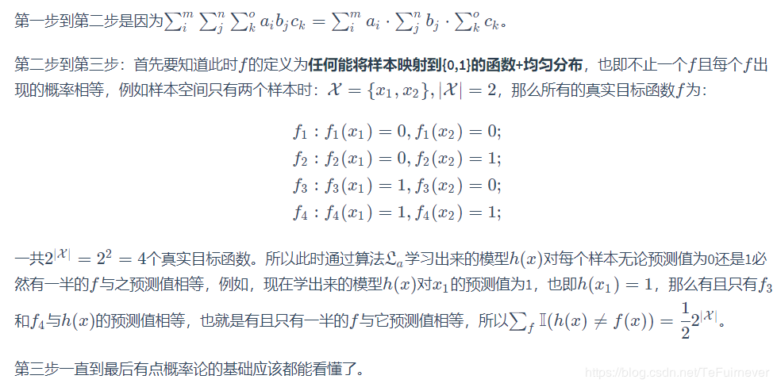
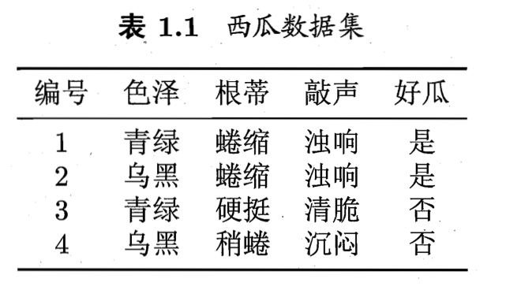
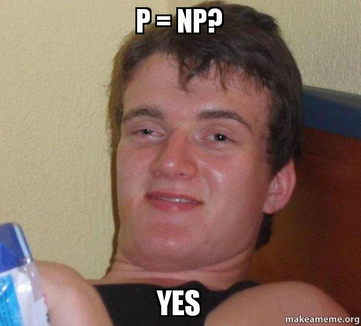

西瓜
第一章：绪论
1.1 引言 & 1.2 基本术语
- 机器学习致力于通过计算的手段，利用经验来改善系统自身的性能。机器学习所研究的主要内容，是关于在数据中产生模型。在面对新的情况时（情况不存在“经验”中），模型可以作出相应的判断。
- 模型：本书用这个词泛指从数据中学得的结果
- 数据集指的是存在许多数据的集合，例如有很多个西瓜的数据，每一个西瓜的数据，被称为示例/样本，而每个西瓜数据中的类目，例如色泽，根蒂等，被称为属性或者特征，属性上面具体的取值被称为属性值，属性张成的空间被称为属性空间/样本空间，例如西瓜数据中有三个属性，那么每个属性作为一个坐标轴，就有一个关于西瓜的三维空间，每个西瓜都可以在这个空间中对应一个坐标向量，因此示例也被称为特征向量
- \( x_{ij}\)指的是\( x_i\)在第j个属性上面的取值
- 模型对应了关于数据的某种潜在的规律，因此也被称为假设，而这种实际真实存在的潜在规律则被称为真相
- 拥有了标记信息的示例，称为样例
- 监督学习
- 分类Classification：预测的是离散值，比如好瓜，坏瓜
- 回归Regression：若预测的是连续值，比如西瓜成熟度0.95，那么此时的输出空间就是全体实数
- 无监督学习
- 聚类Clustering：没有标记的情况下，将训练集中的西瓜分成若干个簇。这些簇对应着某些概念划分
- 泛化generalization的能力是模型适应位置样本的能力。所以虽然训练集只是样本空间的一个很小的采样，依然希望它能够反应样本空间的特性。
- 独立同分布（iid，independently identically distribution） 在概率统计理论中，指随机过程中，任何时刻的取值都为随机变量，如果这些随机变量服从同一分布，并且互相独立，那么这些随机变量是独立同分布。
1.3 假设空间
- 归纳induction：从特殊（具体的数据）到泛化（抽象的规律），从具体的实施归结出一般性规律
- 演绎deduction：从泛化（抽象的规律）到特殊（具体的数据），从基础原理推演出具体状况
- 归纳学习（Inductive Learning）：从样例中学习，狭义的归纳学习要求从训练数据中学得概念，因此已成为概念学习。但是要学到泛化性能好且予以明确的概念实在太困难了
- 假设空间：我们可以把学习过程看作一个在所有假设（Hypothesis）组成的空间中进行搜索的过程，搜索目标是找到于训练集中的瓜的判断正确的假设。假设的表示一旦确定
- 指的是存在的所有可能的假设，一个假设的例子是：“（色泽 = ？）^ （根蒂 = ？） ^ （敲声 = ？）”，这个问号指的只是这是个还没确定的值。一个具体的假设的例子是：“（色泽 = * ） （根蒂 = *） ^ （敲声 = 沉闷）”，这个假设将会被解释成：只要敲声是沉闷的，那么不管色泽和根蒂是什么都可以
- 所谓的版本空间指的是“正确的假设的集合”，也就是说这里面的假设是可以把训练集里面的样本都正确分类。在找版本空间的时候，是把所有假设空间中，不符合训练集的假设（把类别分成负类）的假设给去除，然后保留符合训练集的假设（把类别分成正类），这么下来，剩下来的假设空间集合就属于版本空间：与训练集一致的假设集合
- 布尔概念学习：这整个例子就是352的concept learning，具体可以看那个的笔记
- 只要训练集中有正例，那么\( \Phi \)就不出现，这个表示这组样本空间中不存在正例
- 假设空间值得是所有“假设”组成的空间，每个假设都可以看作出对属性的一种取值组合，目标是从假设空间中找到一个能够泛化所有样本的假设
- 版本空间version space是只有训练集中的样本的集合，版本空间是假设空间的子集
- 这个的目标总归都是从假设空间/版本空间中找到最特殊的却能表示整体样本空间的假设
1.4 归纳偏好 Inductive Bias
- 通过学习得到的模型对应了假设空间中的一个假设
- 机器学习算法在学习过程中对某种类型的假设的偏好，成为归纳偏好。“尽可能一般”的情况我们无法在这三者里用训练样本驱除身下的两个，但是我们的算法必须给出一个选择，这时候的对某种类型假设的偏好就叫做归纳偏好。例如在西瓜例子上面，我们更偏好于根蒂，那么在训练好的假设空间中，比如留下了三个假设，那么我们的模型会选择能够最大化根蒂作用的模型
- 任何一个有效的机器学习算法必有其归纳偏好，否则它将被假设空间中看似在训练集上等效的假设所迷惑，而无法产生确定的学习结果。归纳偏好可以看作学习算法自身在一个很庞大的假设空间中对假设进行选择的启发式或“价值观”
- 奥卡姆剃刀也是一种归纳偏好，比较常用比较基本的原则，那就是若有多个假设与观察一致，那么选用最简单的那个，但其实这个东西也不好整，因为对于不同的情形，也有不同的标准来判断简单这个标准
- 关于“训练集外误差的推导”：
- 对f的定义为任何能将样本映射到{0, 1}的函数+均匀分布
- 概率空间整体为1，所以\( \sum_{h}P(h)=1 \)
- 这个式子推导可以参见NFL
- 这个定理被称为no free lunch theorem，它证明了：无论学习算法多聪明/多笨拙，评估他们的期望性能的算式都是一样
- 这个定理是不是说明了：既然学习算法的期望性能都跟随机生成差不多，那么是不是代表没啥好学的

- 因为是二元分类问题，所以每个样本能被分为{0, 1}两类，而f同时又是均匀分布的，所以全体的f会把全体样本的全体可能性都走一遍，这就用到了排列组合中的排列。
-
以二为底是因为这是二元分类问题
-
接上面的问题，其实不是这样的，因为nfl假设了f的均匀分布，也就是说假设的均匀分布，但很多时候不是这样的，比如姓李的和姓马的都是好人，这个没问题，但是全国范围之内，姓马的和姓李的一样多吗，这是不存在的，他们不是均匀分布的
- 所以这个nfl定理最重要的是他的寓意，也就是说脱离具体的问题，空泛的谈论“什么学习算法更好”毫无意义。
- 若考虑所有潜在的问题，那么所有学习算法都一样的好。我们必须要结合具体的问题，去谈论算法的相对优劣。
1.5 发展历程和1.6应用现状
- 人工智能的发展历程：
- 推理期：人们认为只要能赋予机器逻辑推理能力，机器就具有智能
- 知识期：要使机器具有智能，必须设法使机器拥有知识
- 学习期：要让机器自己学习知识
- 机器学习的研究（归纳学习）：
- 符号主义学习：决策树、归纳逻辑程序设计（Inductive Logic Programming如prolog）
- 缺点是假设空间太大、复杂度极高
- 连接主义学习：神经网络，产生“黑箱模型”
- 缺点是缺乏理论基础，参数的设置也缺乏理论基础，都得手工调参
- 统计学习主义：支持向量机，核方法
- 符号主义学习：决策树、归纳逻辑程序设计（Inductive Logic Programming如prolog）
- 其中，连接主义因为缺乏理论基础所以没落了一阵，得益于数据的变多，计算能力的加强，二十一世纪初又卷土重来（深度学习），简化机器学习技术
- 统计学主要通过机器学习对数据挖掘发挥影响，而机器学习领域和数据库领域则是数据挖掘两大支撑（数据库提供管理技术，机器学习提供分析技术）
课后习题
1.1 表1.1中若只包含编号为1和4的两个样例，试着给出相应的版本空间 
- 因为只剩下了1和4两个样例，这两个样例中的条目都不一样，所以可以从最具体的（青绿，蜷缩，浊响）开始，慢慢抽象起来（带*）
1.2 使用最多包含k个合取式的折合范式来表达西瓜分类问题的假设空间，估算共有多少种可能的假设。
- 刚刚使用的是单个合取式，单个合取式的数目是根据每个特征的取值多少来评估的，色泽取值2+1，根蒂取值3+1，敲声取值3+1，其中加上的1指的是*号，总共有\( 3*4*4 = 48 \)种可能。总共有48个单个合取式的假设，那么如果使用折合范式（包含k个合取式）那么就是组合问题（从48个单个合取式中能够取出多少种折合范式），可以看成是这个单个合取式的假设集合的全部子集数量：\( 2^{k} \)
1.3 若数据包含噪声，则假设空间中有可能不存在与所有训练样本都一致的假设。在此情形下，试设计一种归纳偏好用于假设选择
- 根据这个题目，因为已知噪声存在，“则假设空间中有可能不存在与所有训练样本都一直的假设”，因为噪声的存在，所以整个情况就变得比较复杂。一般来说，应该使用误差函数评估出来的误差最低的假设，不过因为噪声客观存在，误差最低的假设还有可能会产生过拟合的情况
第二章 模型评估与选择
2.1 经验误差与过拟合
- 几个比较常见的terminology
- 在m个样本中有a个样本分类错误
- 错误率error rate: \( E=\frac{a}{m} \)
- 精度accuracy: \( 1 - \frac{a}{m} \)
- 误差error：把学习器的实际预测输出与样本的真实输出之间的差异成为误差（error），其中
- 学习器在训练集上的误差称为训练误差（training error）/经验误差（empirical error）
- 学习器在新样本上的误差成为泛化误差（generalization error）
- 学习器在测试集上的误差成为测试误差
- 过拟合（overfitting）：当训练误差非常小的时候，并不代表这个模型就一定好，因为最终需要得到的模型是一个拥有好的泛化表现的模型。为了达到这个目的，应该从训练样本中尽可能学出适用于所有潜在样本的“普遍规律”。如果训练集能够完整表示整个样本空间那固然好，不过很多时候训练集无法做到这一点。那么这种情况下，如果一个学习器把训练集的数据学的太好了，有可能会把一些只存在于训练集上的样本的一些比较特殊的特征都给学进去了，比如10000个西瓜里面只有100个西瓜是白色的，但是正好这一百个白色的西瓜都在训练集中，如果算法认为“白色”因为在训练集中占有不小的比例，而把白色认为是西瓜的普遍特征，那么这个模型就过拟合了：把训练样本自身的特点当作了所有潜在样本都会具有的一般性质
- 欠拟合（underfitting）：指对训练样本的一般性质没学好，注意这里指的也是一般性质
-
过拟合与NP：过拟合无法避免，因为：机器学习面临的问题通常是NP甚至是NPC，机器学习的算法必然是在多项式时间内P运行完成的，若可彻底避免过拟合，则通过经验误差最小化就能获取最优解，这就意味着\( P=NP \)。

所以只要相信\( P != NP \)，那么过拟合就无法避免
- 问题来了：不经过测试，无法获得泛化误差，或者说可能永远也无法知道完整的泛化误差是多少，然后训练误差又由于过拟合的存在并不绝对适合作为评估模型的标准，那么我们怎么评估模型呢？
2.2 评估方法
-
使用测试集testing set：使用一个测试集来算出对测试集的测试误差，把测试误差当作泛化误差的近似。为了达到测试效果，测试集最好选择与训练集互斥的样本，测试样本最好不再训练集中出现，不过不管怎样，测试集也需要是独立同分布于同一个分布。
-
从一个m个样例的数据集\( D={ (x_1, y_1), (x_2, y_2),…, (x_m, y_m) } \)的数据集中把训练集S和测试集T给分出来：
2.2.1 留出法
- 简单的将数据集D划分为两个互斥的集合，其中一个集合作为训练集S，另一个作为测试集T，用训练集训练模型，用测试集来近似估计泛化误差
- 同时也要注意的是保持数据分布的一致性，例如在分类任务中至少要保持样本的类别比例相似。这个也被称为分层采样（stratified sampling）。例如D中含有1000个样本（500个是正例，500个是负例），那么他分出来的训练集（700个样本）中也得有350个正例；测试集（300个样本）中也得有150个正例，他们的样本中的类别所占的比例应该保持一致
- 但是只用留出法并不足够，不同的划分（比如可以把前十个正例放在训练集，也可以把前十个正例放在测试集中），这样不同的划分也会带来结果上的差别，所以一般要使用若干次随机划分、重复进行实验评估后取平均值作为留出法的评估结果。
- 留出法的弊端：
- 因为希望评估的是用D训练出的模型的性能，但是留出法需要划分训练/测试集，也就是说是不可能把整个数据集都当作训练集的了，那么选择多少数量的训练集/测试集就成了个问题：
- 当训练集较大，测试集较小：测试集较小，所以评估结果的方差较大，不够稳定
- 当训练集较小，测试集较大：训练集较小，训练集与原数据集D会有更大的差别，那么他的评估结果的偏差较大
- 因为希望评估的是用D训练出的模型的性能，但是留出法需要划分训练/测试集，也就是说是不可能把整个数据集都当作训练集的了，那么选择多少数量的训练集/测试集就成了个问题：
2.2.2 交叉验证法(K-fold cross validation)
- 把数据集D划分为k个大小相似（注意是相似）的互斥子集，即 \( D=D_{1} \cup D_{2} \cup … \cup D_{k}, D_{i} \cap D_{j} = null(i \neq j)\ \)
- 并且每个子集D_i都采用分层采样，保持数据的一致性
- 如何评估？每次都进行k词训练和测试，分别每一次都有k-1个子集的并集作为训练集，剩下的那一个作为测试集，返还的时候返还的是k组饰演的均值
- 所以他的表现很大程度上取决于k，交叉验证法常常被称为“k折交叉验证”，如果是10折交叉验证，说明这个验证法取的k是十，有十个子集
- 和留出法一样，为了避免只用单一划分而造成的误差，交叉验证发也会在划分k子集的时候采用多种划分方式，k折交叉验证通常要使用随机不同的划分重复p次，最终的结果也是这p次k折交叉验证的均值
- 留一法（leave one out）：设数据集中有m个样本，留一法是令k=m，每次只留下一个样本作为训练集，这个的弊端当然是整体的效率会非常的低，不管好处是留一法中训练出来的模型与期望评估的用D训练出的模型很相似->结果比较准确
2.2.3 自助法 bootstrapping
- 以自助采样法为基础：给定包含m个样本的数据集D，对D进行采样产生数据集D’：每次随机从D中挑选一个样本，将其拷贝放入D’，但是把这个样本放回初始数据集D中，这样的画在下一次挑选/采样的时候也有可能采到这个样本，和这个过程重复m次，就得到了m个样本的数据集D’
- 样本可能在D‘中重复出现，也有可能在D‘中永远也不出现，永远也不出现的概率是：
$$
\begin{aligned}
\lim_{m\to\infty} (1-\frac{1}{m})^m = \frac{1}{e} \approx 0.368
\end{aligned}
$$
- 可见这个概率还是挺高的。。。也就是说有大概37%的样本未出现在采样数据集D‘中
- 那么就可以把D‘用作训练集，D-D’用作测试集
- 这么做的好处是：现在实际训练集和数据集的样本数量一样，并且还有大概37%的不再训练集中出现的测试集，这样的测试结果被称为包外估计，可以从初始数据集中产生多个不同的训练集，坏处是因为是随机采样，他无法保证数据的一致性
2.2.4 调参与最终模型
- Parameter Tuning就是调参
- 因为很多参数的范围都是整体实数，所以调参实际上要花费大量的时间，科学的调参需要在参数的列表中一个个去尝试比对参数的结果
整个训练和测试的流程：给结果的流程是划分数据集（训练集和测试集）-> 训练数据集 -> 评估数据集 -> 调参 -> 重新训练或确定参数 -> 给整个数据集D上面把参数确定好的模型重新训练 -> 提交用户
2.3 性能度量（Performance measure）
- 给定\( D={ (x_1, y_1), (x_2, y_2),…, (x_m, y_m) } \)的数据集，要评估这个学习器的性能，就要把学习期预测结果\( f(x) \)与真是标记\( y\)做比较，一般用的是下面的mean squared error，均方误差